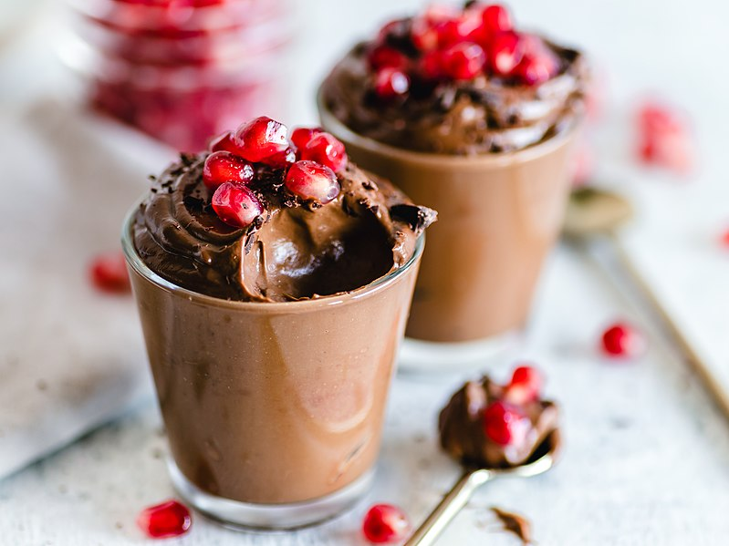

Avocado Choco Mousse

The avocado has gone through enough already
Green, fatty and voluptuous. There are just some of the adjectives people seem to throw around
when it comes to avocado a.k.a the green gold. Mostly seen on toast avocado has had an exponential
rise through the last ten years and made it to the top - DangAlak's Avocado Choco Mousse.
Ingredients
- Two ripe avocados
- Maple Syrup | 50 gr
- Cacao powder | 100 gr
- Water | 100 mL
- Salt | 1 gr
- Vanilla Extract | 1 mL
Steps
- Remove the pits and peel the avocados.
- Put everything in a good blender. Process until smooth.
- Take out of the blender. Scrape the sides using a spatula.
- Let it rest for about one hour.